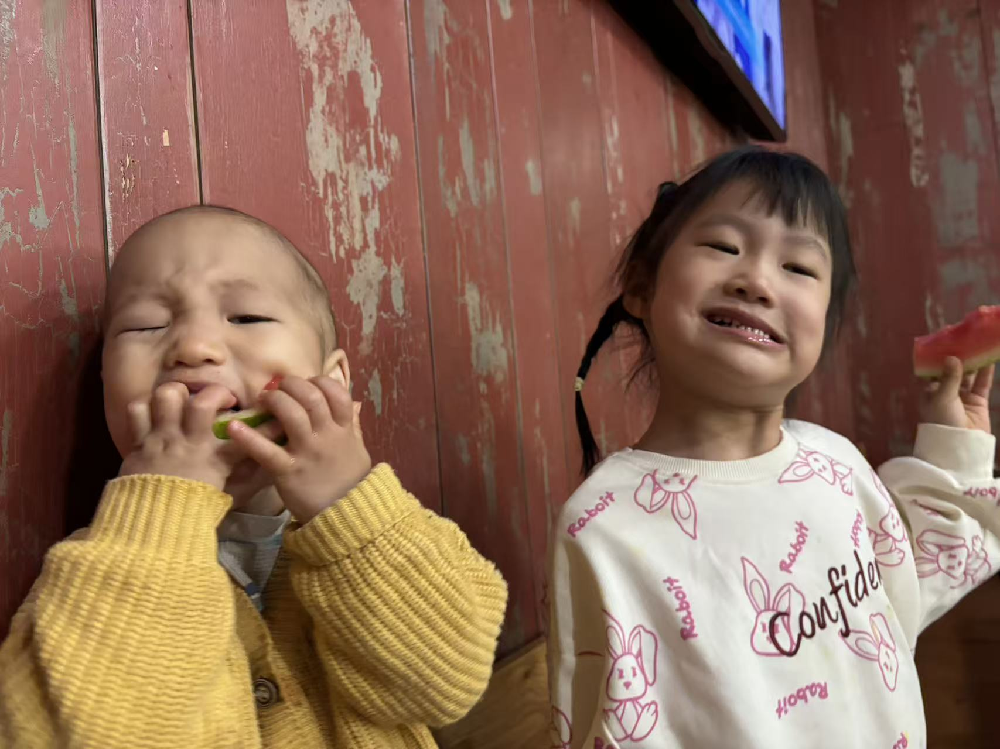
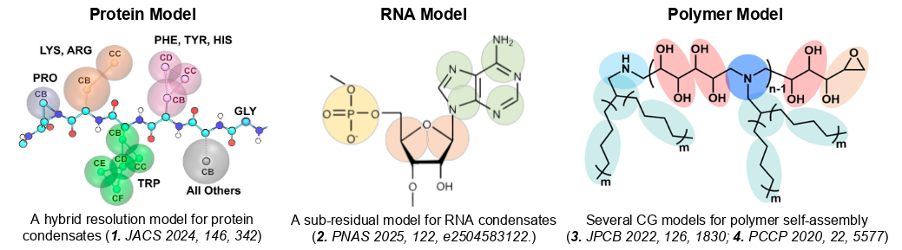
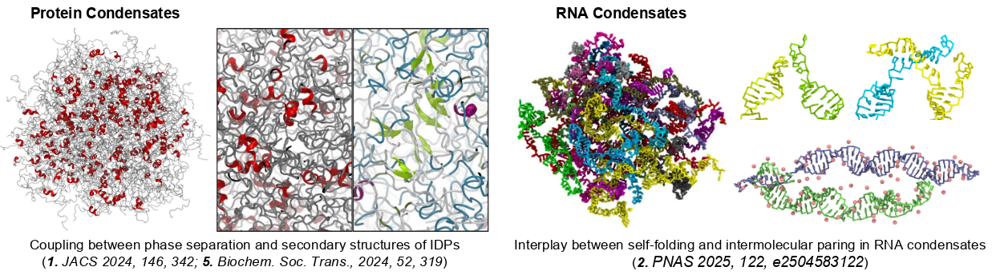
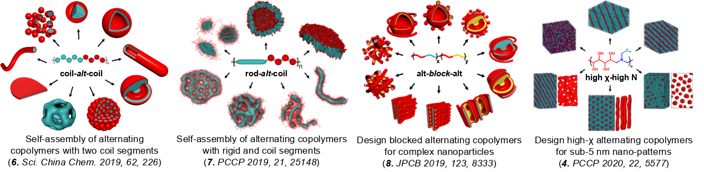
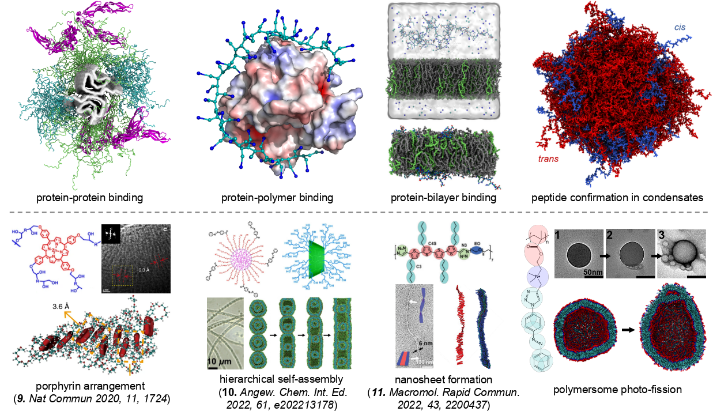

understand the physics of phase behaviors of soft matter

Hi, I am Shanlong Li, postdoc in UMass Amherst. My research focuses on developing multi-scale computational methods to advance our understanding of the dynamics and interactions of bio- and designed macromolecules, including recognition, self-assembly, phase transitions, and aggregation. Welcome to my homepage.
Hybrid resolution coarse-grained model for protein simulations
Intermediate resolution model for RNA simulations
I develop accurate coarse-grained (CG) models for simulating self-assembly and phase behaviors of biomacromolecules on large time and length scales. These models are carefully parameterized using experimental data and all-atom simulations, and are distributed in OpenMM, Gromacs, and Hoomd-blue packages.

I investigate biomolecular condensates through computational modeling of phase separation in proteins and RNA. My work reveals the coupling between molecular structure and phase behavior, including the roles of folding, pairing, and competitive interactions in determining material properties.

I study the self-assembly and phase behaviors of amphiphilic alternating copolymers for smart nanomaterial design. My work explores the morphological diversity of self-assembled structures and their unique characteristics, with findings validated through experimental collaboration.

A hallmark of my research is close collaboration with experimentalists. I provide molecular-level insights into complex experimental phenomena across diverse topics—from smart materials and protein-polymer interactions to mesoscale analyses of phase behavior. Through an integrative computational and experimental approach, we reveal and interpret complex behaviors in biological and soft matter systems.
